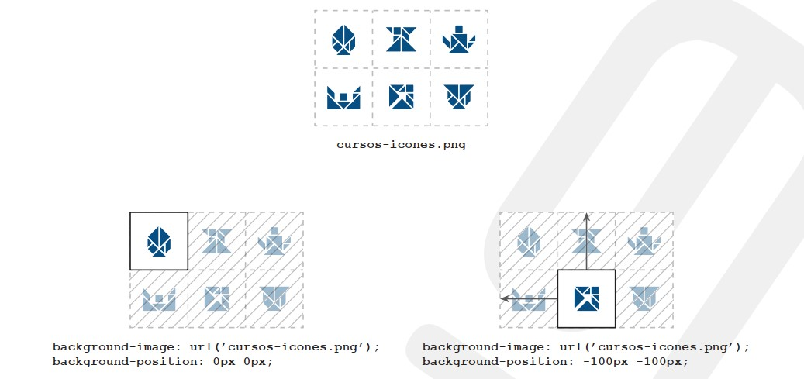

Normalmente, uma página web é formada por diversas imagens pequenas ou médias. Se essas imagens forem adicionadas com o elemento img, o navegador realizará uma requisição HTTP para cada imagem. Consequentemente, o tempo de carregamento da página será alto devido a quantidade de requisições e ao overhead dos pacotes HTTP.
Uma técnica amplamente utilizada para melhorar o tempo de carregamento das páginas web é denominada sprite. Essa técnica consiste em agrupar todas as imagens pequenas e médias em uma única imagem grande e depois “recortá-la” com as propriedades CSS.
